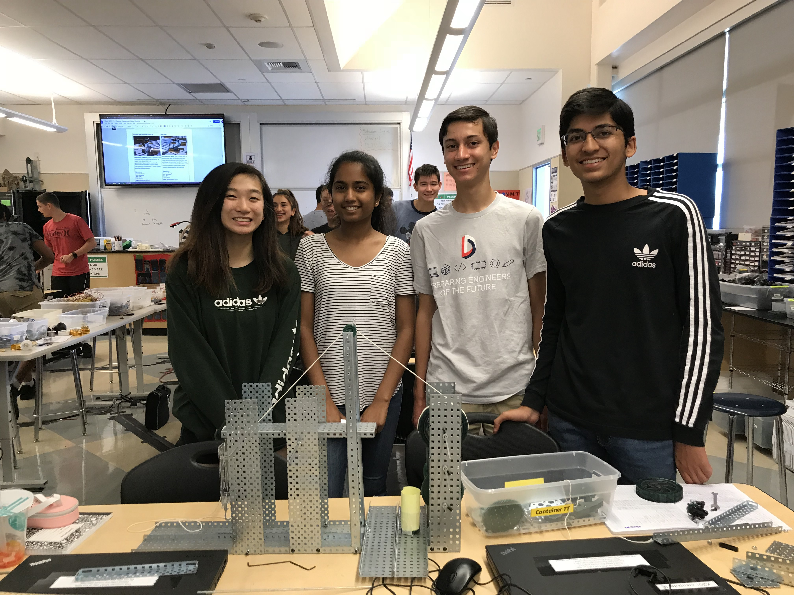

Scratch Project
CSE (Computer Science/Software Engineering)
August 29th - September 8th, 2017
The objective of this project was to create a bug-free game that had level progression. My role in this project was a developer. My group and I created a game where two players had to compete to finish a maze. The mazes became more difficult as the game progressed and each one was completed. The two players gained points by collecting "gems" and finishing the mazes quickly. The winner is the player with the highest score after completing all of the mazes. We developed our brainstorming skills by coming up with ideas and using a flow chart to map them. We I also developed our logging and documentation skills by keeping a daily log of what happened each day and adding comments to our code explaining what each piece does. During this project, we had to overcome some limitations of Scratch. Scratch only allows one user at a time to be working on the same project. We solved this issue by creating copies of the game uses Scratch’s remix feature and working on different aspects and features of our game. We each coded in only certain sprites. At the end of the day, we assembled all of the code in our sprites together uses Scratch’s backpack feature. This allowed us to be more efficient as everyone in the group could contribute code to the game simultaneously. You can find the daily log and documentation here.
Hangman Project
CSE (Computer Science/Software Engineering)
January 24th - February 2nd, 2018
The objective of this project was to create a themed hangman game that was played in the terminal. My role in this project was a developer. My partner and I created a Spongebob-themed hangman game. All of the words were spongebob related and we included some ASCII art to make the game more aesthetic. We developed our problem-solving skills by finding ways around issues we had when coding our game. During this project we had to overcome limitations of Cloud 9, the main one being that it is a non-GUI environment. Everything had to be played in the terminal but we were still able to show some images using ASCII art. You can download the project here. It is made for Python 2.7.

Project Compound
POE (Principles of Engineering)
August 30th - September 7th, 2018
The objective of this project was to create a compound machine that performed a basic task. My role was building a 2nd class lever and helping out on documentation. My group created a machine that pours dog food into a bowl. The input was provided by spinning a wheel which acted like a crank for a simple gear train. The axle of the output gear in the gear train drove another wheel which had a string wrapped around it. This caused the wheel to pull the string when it was spun. The string ran over a pulley and connected to the far end of our lever, next to the cup of dog food. When the string was pulled, it rotated the lever 180 degrees and dumped the dog food into a bowl placed below the dropping point. During the project we ran into issues early on. We found that our small driver gear required a lot of rotations. Our solution was to replace it with a larger gear which ended up requiring us to rebuild the entire gear train because there wasn’t enough space between the bottom of the machine and the 2nd gear. You can view the full project documentation here for more information.